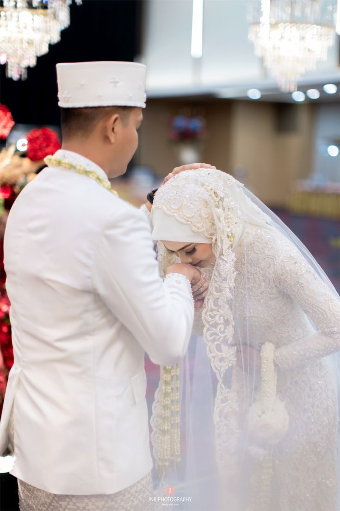
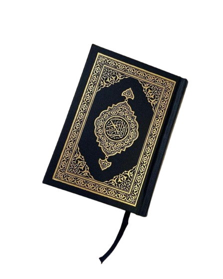
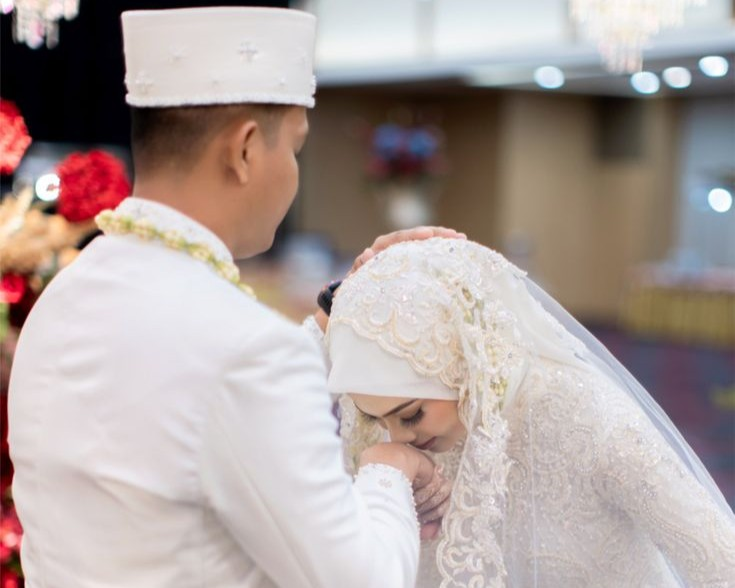
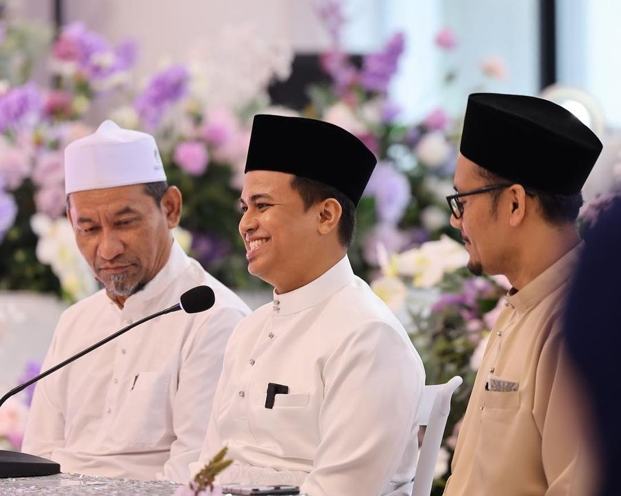
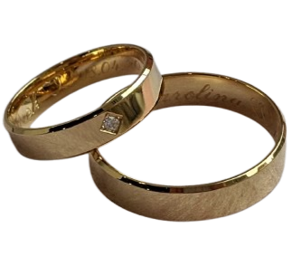
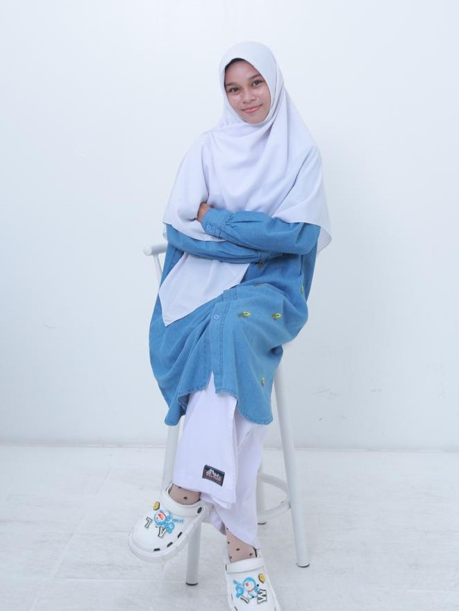

Membangun Keluarga Sakinah
dengan Ilmu yang Benar
Selamat datang di Portal Edukasi Fiqih Munakahat Digital. Platform ini menyajikan rekonstruksi hukum pernikahan Islam secara komprehensif, memadukan khazanah fiqih klasik dengan hukum positif di Indonesia.
Website ini dirancang khusus sebagai media edukasi digital untuk meningkatkan pemahaman berbagai kalangan masyarakat—mulai dari remaja, calon pengantin, hingga orang tua—mengenai kesucian ikatan pernikahan serta hak dan kewajiban dalam rumah tangga secara adil. Seluruh informasi disusun berdasarkan Al-Qur'an, As-Sunnah, Kompilasi Hukum Islam (KHI), serta UU No. 16 Tahun 2019 tentang Perkawinan, guna memberikan literasi hukum pranikah yang valid demi terwujudnya keluarga yang sakinah, mawaddah, warahmah.
7
Modul Materi
8
Artikel Riset
100%
Berbasis Syariat


"Mitsaqan Ghalizha"
QS. An-Nisa: 21
Visi & Misi
Komitmen kami dalam menghadirkan edukasi pernikahan Islam yang terpercaya
Terdepan & Inklusif
Menjadi portal literasi digital Fiqih Munakahat terdepan yang inklusif, adaptif, dan mudah dipahami oleh seluruh lapisan masyarakat demi membangun ketahanan keluarga islami yang kokoh.
Tiga Pilar Utama
- 1 Menyediakan materi hukum pernikahan Islam yang valid dan tervalidasi secara akademis serta syariat.
- 2 Mengintegrasikan hukum Islam dan hukum positif Indonesia dalam satu wadah informasi yang mudah diakses.
- 3 Memberikan edukasi pranikah yang mudah diakses guna meminimalisir risiko sengketa rumah tangga.
Dasar Hukum Munakahat
Fondasi syariat & regulasi pernikahan Islam yang dipadukan dengan hukum positif Indonesia
Definisi Perkawinan
Munakahat berasal dari kata An-Nikah yang berarti menghimpun atau menyatukan. Secara syar'i, perkawinan adalah akad yang sangat kuat (mitsaqan ghalizha) untuk mentaati perintah Allah dan melaksanakannya merupakan nilai ibadah yang mulia — sebuah sunnah para nabi dan rasul sepanjang sejarah.
Hukum Pernikahan (Kondisional)
Hukum menikah berubah sesuai kondisi dan kemampuan seseorang
Wajib
Takut terjerumus zina & sudah mampu secara fisik dan finansial.
Sunnah
Mampu secara fisik dan materi namun masih bisa menahan hawa nafsu.
Mubah
Kondisi normal, tidak ada dorongan kuat maupun hambatan berarti.
Makruh
Mampu secara fisik namun belum mapan finansial dan emosional.
Haram
Jika niat menikah untuk mendzalimi, menyakiti, atau menganiaya pasangan.
Landasan Hukum Islam
QS. Ar-Rum: 21
Landasan utama asas pernikahan: mencapai sakinah, mawaddah wa rahmah — ketenangan, cinta, dan kasih sayang dalam rumah tangga.
QS. An-Nisa: 3
Landasan asas keadilan dalam pernikahan dan pembatasan poligami secara ketat dengan syarat kemampuan berlaku adil.
Hadis Nabi — Kemampuan (Baa'ah)
"Wahai para pemuda, barangsiapa di antara kalian yang telah mampu (baa'ah), maka hendaklah menikah…" (HR. Bukhari & Muslim).
Kompilasi Hukum Islam (KHI)
Regulasi resmi hukum Islam di Indonesia sebagai pedoman Pengadilan Agama dalam menyelesaikan perkara perkawinan, waris, dan hibah.
Asas Regulasi di Indonesia
Berdasarkan UU No. 16 Tahun 2019 tentang Perkawinan
Asas Monogami
Poligami hanya diizinkan dengan syarat sangat ketat dan melalui izin Pengadilan Agama.
Kesukarelaan
Pernikahan didasarkan atas persetujuan bebas kedua calon mempelai tanpa paksaan pihak manapun.
Batas Usia 19 Tahun
Usia minimal 19 tahun berlaku untuk pria dan wanita sesuai UU No. 16 Tahun 2019.
Pranikah & Mahram
Validasi larangan pernikahan dan tahapan penjajakan islami menuju pernikahan yang sah
Validasi Larangan Nikah (Mahram)
Mahram Muabbad
Dilarang Selamanya- Nasab (Darah): Ibu, anak perempuan, saudara perempuan, bibi (dari ayah/ibu), dan keponakan perempuan.
- Radha'ah (Sepersusuan): Wanita yang menyusui dan anak perempuan yang disusui bersama (saudara sepersusuan).
- Mushaharah (Ipar/Mertua): Mertua, menantu, dan ibu tiri atau anak tiri dari pernikahan yang telah dikonsumsi.
Mahram Ghairu Muabbad
Dilarang Sementara- Wanita yang masih berada dalam masa iddah (periode menunggu pasca cerai atau kematian suami).
- Memadu dua wanita bersaudara kandung (atau seorang wanita dengan bibinya) dalam satu ikatan pernikahan bersamaan.
- Pernikahan beda agama: larangan mutlak menurut KHI dan Fatwa MUI yang berlaku di Indonesia.
Proses Penjajakan Islami
Ta'aruf & Nazar
Tahap 1Saling mengenal melalui perantara pihak ketiga yang terpercaya tanpa berkhalwat (berduaan tanpa mahram). Pria diperbolehkan melihat wajah dan telapak tangan calon istri (Nazar) sebagai dasar pertimbangan yang sah, bukan nafsu.
Khitbah (Lamaran)
Tahap 2Pernyataan komitmen resmi dari pihak pria untuk menikahi wanita. Penting: Khitbah belum menghalalkan pergaulan bebas — keduanya masih berstatus ajnabi (orang asing secara hukum) hingga akad nikah dilangsungkan.
Walimatul 'Ursy
Tahap 3Resepsi pernikahan yang hukumnya Sunnah Muakkadah (sangat dianjurkan) sebagai pengumuman resmi (I'lan) pernikahan kepada masyarakat agar terhindar dari fitnah. Wajib diselenggarakan secara sederhana tanpa pemborosan dan kemewahan berlebihan.
Panduan Nikah Lengkap
Rukun, syarat, mahar, dan hak-kewajiban pasutri berdasarkan fiqih Islam & hukum Indonesia
Lima Rukun Nikah (Syarat Sah)

Mempelai Pria & Wanita
Bebas dari halangan mahram, berakal, baligh, dan tidak dalam keadaan paksaan dari pihak manapun.
Wali Nikah
Ayah kandung sebagai wali utama, lalu urutan wali nasab. Jika tidak ada, menggunakan Wali Hakim dari Pengadilan Agama.

Dua Saksi Pria
Muslim, adil, baligh, dan berakal. Wajib menyaksikan langsung pengucapan ijab qabul dalam satu majelis.
Ijab & Qabul
Diucapkan dalam satu majelis tanpa jeda yang merusak makna. Ijab dari wali nikah, qabul dari mempelai pria.
Mahar (Mas Kawin)

Mahar adalah hak mutlak pengantin wanita yang wajib dipenuhi oleh pihak pria sebagai bagian dari syarat sahnya pernikahan. Bentuk dan nilainya disepakati bersama antara kedua pihak.
Prinsip Mahar
Tidak memberatkan pria secara berlebihan namun tidak boleh meremehkan martabat dan kedudukan wanita.
Boleh Ditangguhkan
Mahar boleh dibayar kemudian (diutangkan) jika disetujui calon istri dan disebutkan jelas saat ijab qabul berlangsung.
Hak & Kewajiban Pasutri
Kewajiban Suami
- Memberikan nafkah lahir: pangan, sandang, dan papan yang layak sesuai kemampuan.
- Memberikan nafkah batin (kebutuhan biologis) secara adil dan penuh martabat.
- Membimbing dan mendidik istri dalam urusan agama dan kehidupan rumah tangga.
Kewajiban Istri
- Menaati suami dalam perkara yang tidak bertentangan dengan syariat Allah SWT.
- Menjaga kehormatan diri, keluarga, dan harta suami saat suami tidak berada di rumah.
- Mengelola urusan rumah tangga dengan baik, penuh tanggung jawab, dan bijaksana.
Harta dalam Pernikahan
- Istri memiliki hak penuh atas seluruh harta bawaannya sebelum menikah.
- Harta yang didapat bersama setelah akad nikah menjadi Harta Bersama (Gono-gini).
- Pembagian harta bersama diatur melalui musyawarah atau putusan Pengadilan Agama.
Artikel & Riset
Kumpulan tulisan akademis dan analisis mendalam seputar Fiqih Munakahat
Kontekstualisasi Fiqih Munakahat di Era Digital bagi Gen Z
Kajian tentang adaptasi hukum pernikahan Islam dalam menghadapi tantangan budaya digital dan perubahan gaya hidup generasi muda masa kini.
Kedudukan KHI dan UU Perkawinan dalam Menjamin Hak-Hak Perempuan
Analisis yuridis tentang sejauh mana regulasi hukum positif Indonesia berhasil melindungi dan menjamin hak-hak fundamental kaum perempuan dalam perkawinan.
Bedah Masalah Wali Hakim dan Wali Adhal (Wali yang Enggan Menikahkan)
Pembahasan mendalam tentang mekanisme perpindahan wali nikah dari wali nasab kepada wali hakim beserta implikasi hukumnya di Indonesia.
Poligami dalam Hukum Islam dan Hukum Positif Indonesia
Kajian komparatif antara ketentuan poligami dalam fikih klasik dengan regulasi ketat yang diterapkan oleh Undang-Undang Perkawinan Indonesia.
Eksplorasi Perjanjian Pranikah (Pre-Nuptial Agreement) Perspektif Syariah
Telaah tentang keabsahan dan batasan perjanjian pranikah menurut hukum Islam serta implementasinya dalam sistem hukum keluarga di Indonesia.
Aspek Hukum Nikah Siri dan Dampak Yuridisnya di Mata Negara
Penelusuran status hukum pernikahan tidak tercatat (nikah siri) beserta akibat hukumnya terhadap hak-hak anak, warisan, dan perlindungan perempuan.
Kriteria Memilih Pasangan Hidup Ideal Berdasarkan Asas Kafa'ah (Kesetaraan)
Pembahasan konsep kafa'ah dalam Islam sebagai tolok ukur kesepadanan calon pasangan hidup dan relevansinya dalam kehidupan modern.
Manajemen Konflik Rumah Tangga: Konsep Nusyuz dan Langkah Mediasi
Panduan komprehensif tentang konsep nusyuz dalam Islam dan strategi mediasi berbasis Al-Qur'an untuk menyelesaikan konflik rumah tangga secara damai.
Pertanyaan Umum (FAQ)
Jawaban atas pertanyaan yang paling sering diajukan seputar pernikahan Islam
Apakah sah menikah tanpa wali dari pihak wanita?
Tidak sah. Wali nikah adalah rukun nikah yang wajib dan tidak dapat diabaikan. Pernikahan tanpa wali yang sah hukumnya batal menurut jumhur ulama. Apabila wali nasab tidak ada atau menolak (adhal), maka wewenang berpindah kepada Wali Hakim yang ditunjuk Pengadilan Agama.
Berapa batas usia minimal menikah di Indonesia?
Berdasarkan UU No. 16 Tahun 2019 tentang Perubahan atas UU No. 1 Tahun 1974 tentang Perkawinan, batas usia minimal menikah adalah 19 tahun, berlaku sama untuk pria maupun wanita. Pernikahan di bawah usia tersebut hanya dapat dilakukan dengan dispensasi dari Pengadilan Agama.
Apakah mahar boleh diutang atau ditangguhkan?
Boleh, dengan dua syarat: (1) disetujui oleh calon istri secara sukarela tanpa paksaan, dan (2) jumlah serta tenggat waktu pembayaran disebutkan dengan jelas saat ijab qabul berlangsung. Mahar yang diutangkan tetap menjadi tanggungan suami dan wajib dilunasi.
Apakah sah pernikahan beda agama di Indonesia?
Tidak sah. Menurut Kompilasi Hukum Islam (KHI) Pasal 40 dan 44, serta Fatwa MUI Tahun 2005, pernikahan antara seorang Muslim dengan non-Muslim hukumnya haram dan batal. Hal ini juga selaras dengan QS. Al-Baqarah: 221 yang melarang kaum muslimin menikahi kaum musyrikin.
Profil
Informasi mahasiswa pengembang portal edukasi ini

Dwita Anjassari
Program Studi :
S1 Hukum Keluarga Islam
Institusi :
IAIN Datuk Laksemana BengkalisFokus Riset :
Fiqih Munakahat

Lokasi Kampus
IAIN Datuk Laksemana Bengkalis
Hubungi Saya
 Instagram
Instagram